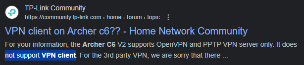

| Ник | Пост | Дата |
|---|---|---|
| Almafox | День добрый! А никто случаем не знает как настроить антизапрет на роутере TP-link archer C6 , вроде возможность на роутере есть , а что писать в разделе OPNVPN не знаю (логин пароль , порты) ? | 2024-01-24T02:42:35.990Z |
| ilyaigpetrov(ilyaigpetrov) | А есть там возможность файл конфигурации импортировать? Вот этот: https://antizapret.prostovpn.org:8443/antizapret-tcp.ovpn. | 2024-01-24T03:06:44.858Z |
| Almafox | нет , есть только экспортировать файл сконфигурированный на самом роутере | 2024-01-24T03:14:13.832Z |
| 0ka(0ka) |
 | 2024-01-24T08:32:29.616Z |
| Almafox | Т е. Никак , нужно чтобы роутер поддреживал opnvpn client ? | 2024-01-24T08:45:30.176Z |
| 0ka(0ka) | да, возможно есть другая прошивка, но я не искал | 2024-01-24T08:51:42.240Z |
| ValdikSS | Да, нужна поддержка OpenVPN. | 2024-01-24T08:58:24.154Z |
| Almafox | Именно client или server , т.к. в тех характеристиках пишет что есть и то и другое , может на другой прошивке ? | 2024-01-24T08:59:59.854Z |